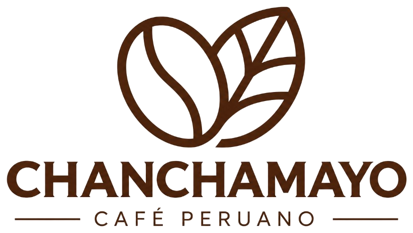
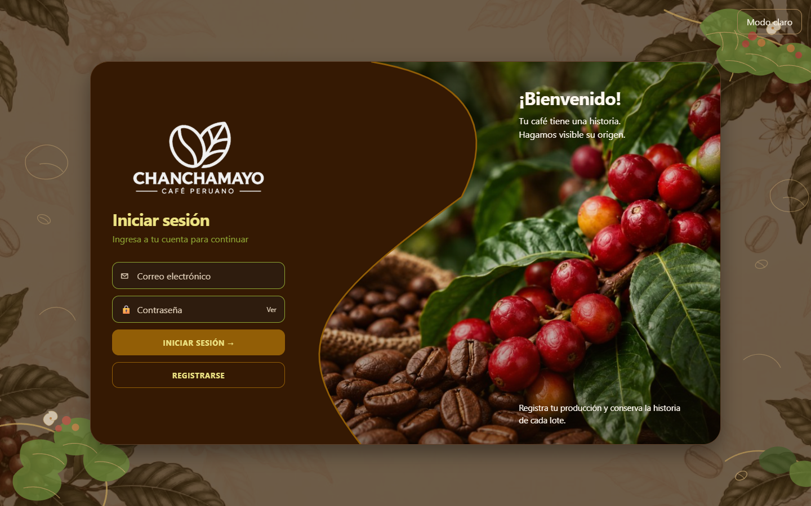
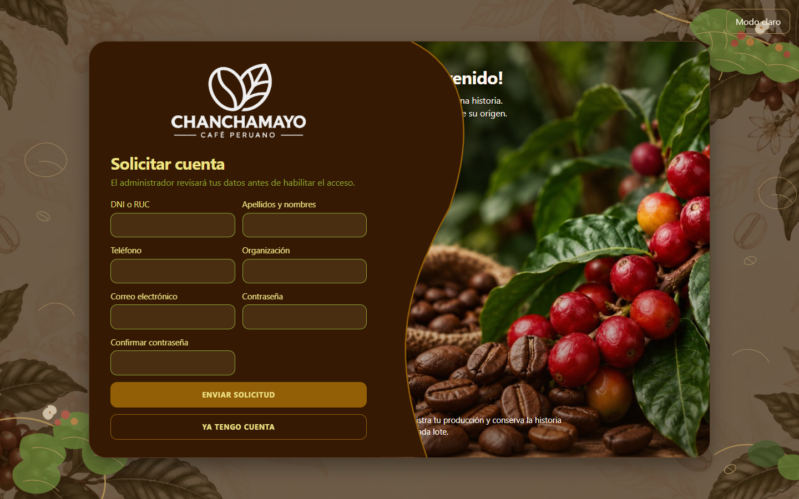

Origen difícil de verificar
Sin un vínculo estable entre productor, parcela y lote, el nombre de la zona no demuestra de qué finca salió ese café.
Feria universitaria de Ingeniería de Sistemas e Informática
Chanchamayo · Café peruano
Informe de problemática, solución tecnológica, impacto y evidencias de funcionamiento. El documento distingue el incremento ya construido del producto final todavía previsto.

Contenido
Aspecto 1
El proyecto parte de una dificultad concreta: garantizar una trazabilidad integrada y verificable de los lotes de café amazónico de Chanchamayo. El origen de un café puede estar repartido entre la ficha del productor, el cuaderno de la parcela, el peso de la cosecha y la palabra de quien lo comercializa. Cuando esas piezas no viven en un mismo registro, un comprador no puede reconstruir la historia del lote y un productor no puede mostrarla de forma ordenada.
Sin un vínculo estable entre productor, parcela y lote, el nombre de la zona no demuestra de qué finca salió ese café.
Documento, distrito, variedad, fecha y kilogramos suelen quedar en soportes distintos. Consultarlos juntos exige reunir papeles.
Un cuaderno o una hoja de cálculo local se pierden, se copian a mano y no distinguen quién puede ver o modificar cada ficha.
Si alguien cambia una fecha o un peso después del registro, el soporte tradicional no deja una prueba independiente de esa alteración.
Para el productor, la consecuencia es que su café compite sin una historia consultable. Puede haber cultivado en un distrito reconocido y aun así no tener cómo mostrar, en un solo lugar, la parcela, la variedad y la cantidad del lote. Para el comprador, la consecuencia es confiar en una afirmación de origen que no puede recorrer. La falta de un historial consultable debilita la transparencia de la cadena y deja la confianza apoyada en la relación personal, no en el registro.
Este informe no aporta cifras de producción, de pérdida ni de mercado. Esas magnitudes no están medidas en el repositorio. La problemática se sostiene por la naturaleza del registro fragmentado y por el problema declarado en la documentación del propio PMV1.
Aspecto 2
La solución propuesta es una plataforma web que registra a los participantes y el origen de cada lote, y que, en su forma final, permitirá verificar que esos registros no fueron alterados. Hoy está construido el primer incremento. El anclaje en Blockchain es la continuación documentada, no una función ya usable.
La pantalla no habla con la base de datos. Angular llama a la API. Express entrega la petición a un controlador. El controlador llama a un caso de uso. El caso de uso aplica las reglas del dominio y pide guardar o leer mediante un puerto. El repositorio PostgreSQL ejecuta el SQL. El único archivo que une las clases concretas es el contenedor de arranque.
La base es PostgreSQL, no MySQL. El backend usa el cliente pg y una cadena de conexión. No usa el cliente oficial de Supabase ni Supabase Auth. La sesión es un token JWT emitido por el propio backend, con la contraseña guardada como hash bcrypt. Angular no recibe claves de la base.
Las tablas se encadenan así: usuario, productor, parcela, lote y análisis de coherencia. Una solicitud de registro vive aparte hasta que un administrador la aprueba y, en la misma transacción, crea la cuenta y la ficha.
Blockchain en el producto final
En el producto final, Blockchain no sustituye a PostgreSQL. La base sigue siendo el lugar donde se consulta el productor, la parcela y el lote. La cadena aportaría una copia verificable de hechos ya aceptados por el sistema, de modo que un tercero pueda comprobar si el registro que ve coincide con el que se publicó.
La arquitectura hexagonal ya deja un lugar para ese paso. Un caso de uso futuro hablaría con un puerto de eventos y con un puerto de blockchain. Esos puertos se implementarían como adaptadores nuevos, sin reescribir el dominio del lote. La documentación del proyecto sitúa ese puerto en el PMV2. El PMV3, según la misma documentación, agrega validación de registros, QR, seguridad, rendimiento y usabilidad. Ninguno de esos componentes existe en el código actual.
En el repositorio hay, además, un notebook de laboratorio, notebooks/PoC_RF_IA_01.ipynb. Entrena clasificadores sobre una hoja de cálculo que no está en el proyecto y no es llamado por la aplicación. No es evidencia de Blockchain ni del funcionamiento de la plataforma.
Diferenciación
La propuesta es innovadora para la cadena cafetalera de Chanchamayo porque no se queda en un formulario de cosecha ni en una promesa aislada de Blockchain. Ordena primero el origen —quién produce, en qué parcela y con qué lote— y reserva la integridad verificable para cuando existan eventos que merezcan anclarse. Esa secuencia evita publicar en una cadena datos que el propio sistema todavía no sabe relacionar.
La ingeniería ya visible está en la separación de capas, en las reglas de negocio del dominio y en el control de permisos. El dominio no depende de Express, de Angular ni de PostgreSQL. Las pruebas automáticas cubren esas reglas sin levantar la base. Cambiar el almacenamiento o, más adelante, añadir un adaptador de blockchain no obliga a reescribir la historia del lote.
| Momento | Registro tradicional | Solución propuesta |
|---|---|---|
| Origen | Nombre de la zona o de la finca, a menudo suelto. | Productor, parcela y lote ligados por identificadores. |
| Consulta | Hay que reunir papeles o preguntar a quien registró. | Una pantalla muestra la cadena del lote ya guardado. |
| Acceso | Quien tiene el archivo puede verlo o cambiarlo. | Rol de administrador o de productor, con solicitud previa de cuenta. |
| Integridad | Un cambio posterior no deja una prueba externa. | Previsto: ancla de blockchain para detectar la diferencia. Aún no construido. |
| Historial | Anotaciones sucesivas, si alguien las conserva. | Previsto: eventos de trazabilidad. El PMV1 deja ese espacio vacío a propósito. |
La columna de la derecha describe el producto hacia el que apunta el proyecto. Solo las tres primeras filas tienen una implementación actual, y aun esa implementación depende de que la base de datos esté disponible. La integridad anclada y el historial de eventos siguen siendo diseño.
Aspecto 3
Los efectos siguientes son consecuencias razonables de la solución si el producto final llega a usarse. No son resultados medidos. El repositorio no contiene estudios de adopción, precios, entrevistas ni indicadores ambientales.
Un origen consultable puede fortalecer la confianza entre quien cultiva y quien compra, porque la historia del lote deja de depender solo de una conversación.
Poder mostrar procedencia, variedad y cantidad facilita la diferenciación comercial del café. El sistema no calcula ni promete un sobreprecio.
El PMV1 ya digitaliza la ficha de origen. El producto final sumaría Blockchain como mecanismo de integridad, no como un adorno de la marca.
Guardar distrito, área, altitud y coordenadas permite documentar el contexto productivo. Eso no certifica una práctica sostenible.
El catálogo de distritos y la identidad visual sitúan el registro en Chanchamayo. La aportación regional prevista es poner la trazabilidad del café amazónico de esa provincia en una herramienta propia, en lugar de un archivo genérico sin reglas de origen. Ese valor se realizará cuando los productores usen el sistema y, más adelante, cuando los registros puedan verificarse. Hoy es una dirección de diseño, no un impacto observado.
Hoja de ruta oficial
La planificación escrita en el repositorio reconoce tres incrementos. No hay un cuarto. La inteligencia de coherencia ya pertenece al PMV1. El puerto de blockchain está descrito para el PMV2, junto con los eventos de trazabilidad. El PMV3 refuerza la verificación hacia afuera, con QR y criterios de seguridad, rendimiento y usabilidad.
Esta lectura sigue docs/ARCHITECTURE.md y docs/PMV1.md. No adelanta el ancla de blockchain al incremento actual ni presenta el indicador de coherencia como una certificación del café.
Aspecto 4
El 29 de octubre de 2026 se levantaron la API en el puerto 3000 y la aplicación Angular en el puerto 4200. Se recorrió la interfaz pública y se ejecutó la suite automática del backend. La base configurada no aceptó la conexión: el inicio de sesión respondió que no pudo completar la operación y el servidor registró que el usuario de PostgreSQL del proyecto no fue encontrado. Por eso no hay capturas de los módulos que exigen sesión. Inventarlas habría falseado la evidencia.


| Módulo pedido | Qué hay en el sistema | Estado |
|---|---|---|
| Panel principal | Cuenta productores, parcelas, lotes y kilogramos de lo que el usuario puede ver. La actividad reciente se muestra vacía por decisión del PMV1. | En código. Sin captura. |
| Productores | Listado, alta, edición, consulta, baja y búsqueda por nombre, documento u organización. Solo el administrador registra y elimina. | En código y en pruebas. Sin captura. |
| Parcelas | Alta ligada a un productor, con distrito de la provincia, área, altitud y coordenadas. | En código y en pruebas. Sin captura. |
| Lotes | Alta con código CHNY, consulta, edición y baja. El estado inicial es REGISTRADO. | En código y en pruebas. Sin captura. |
| Consulta de trazabilidad | Cadena visual productor, parcela, lote y registro de producción, más el último indicador de coherencia si existe. No hay eventos de cadena. | En código. Sin captura. |
| Permisos | Roles administrador y productor. Solicitudes de alta. Cuentas temporales. Otorgar o retirar administrador. Un productor no administra a otros. | En código y en pruebas. Sin captura. |
| Blockchain | No hay contrato, red, ancla ni verificación. El notebook del repositorio tampoco está conectado. | No implementado. No es evidencia. |
En la misma fecha, npm test en el backend terminó con 17 pruebas aprobadas en 4 archivos: dominio, casos de uso, adaptador de consulta de documento y API. Esas pruebas usan repositorios en memoria y una respuesta fija de inteligencia artificial. Comprueban, entre otros comportamientos, el alta encadenada de cuenta, parcela y lote; el rechazo de un análisis con clasificación inválida; que una solicitud pendiente no inicia sesión; y que un productor no puede eliminar productores mientras un administrador sí puede, sin borrar los datos de otro.
Las pruebas no sustituyen una captura con datos reales de Supabase. Demuestran que la lógica del PMV1 se ejecuta sin la base. No demuestran Blockchain.
Cierre